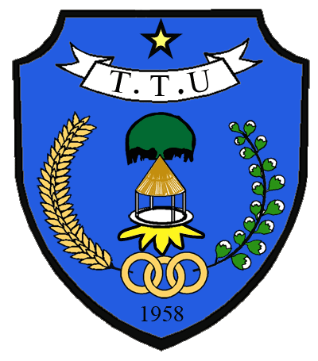

<!DOCTYPE html>
<html lang="id">
<head>

<meta charset="UTF-8">
<meta name="viewport" content="width=device-width, initial-scale=1.0">

<title>Desa Noebaun - Beranda</title>


<style>

*{
margin:0;
padding:0;
box-sizing:border-box;
font-family:Arial,sans-serif;
}


body{
background:#f5f5f5;
}


/* HEADER */

header{

background:#0b7a3b;
color:white;
padding:20px;
text-align:center;

}


header h1{

font-size:32px;

}


/* MENU */


nav{
    background:#0b6b2d;
    position:relative;
}

.menu-icon{
    font-size:30px;
    color:white;
    padding:15px;
    cursor:pointer;
    display:none;
}

.menu{
    display:flex;
    justify-content:center;
    flex-wrap:wrap;
}

.menu a{
    color:white;
    text-decoration:none;
    padding:15px 20px;
    display:block;
    transition:0.3s;
}

.menu a:hover{
    background:#0da354;
}

/* Tampilan HP */
@media(max-width:768px){

.menu-icon{
    display:block;
}

.menu{
    display:none;
    flex-direction:column;
    width:100%;
}

.menu.show{
    display:flex;
}

.menu a{
    border-top:1px solid rgba(255,255,255,.2);
    text-align:center;
}

}


/* BANNER FOTO DESA */


.banner{


background:

linear-gradient(
rgba(0,0,0,.5),
rgba(0,0,0,.5)

),

url("1.png");


background-size:cover;

background-position:center;

height:350px;


display:flex;

align-items:center;

justify-content:center;


color:white;

text-align:center;


}


.banner h2{

font-size:40px;

}


/* CONTAINER */


.container{

width:90%;

margin:auto;

padding:30px 0;


}


.card{


background:white;

padding:25px;

margin-bottom:20px;

border-radius:10px;

box-shadow:0 3px 10px #ccc;


}


.card h2{

color:#0b7a3b;

margin-bottom:15px;


}


/* DATA DESA */


.info{

display:flex;

gap:20px;

flex-wrap:wrap;

}


.info-box{


background:#0b7a3b;

color:white;

padding:20px;

border-radius:10px;


flex:1;

min-width:200px;

text-align:center;


}


/* BERITA */


.berita{


display:flex;

gap:20px;

flex-wrap:wrap;


}


.berita div{


background:white;

padding:20px;

border-radius:10px;

flex:1;


}


/* FOOTER */


footer{


background:#075b2d;

color:white;

text-align:center;

padding:20px;


}

.logo-desa{

width:90px;

height:90px;

border-radius:50%;

object-fit:cover;

border:4px solid white;

margin-bottom:10px;

}


  <script>
function toggleMenu(){
    document.getElementById("menu").classList.toggle("show");
}
  </script>


</head>


<body>


<header>



<h1>Website Resmi Desa Noebaun</h1>

<p>Membangun Desa, Melayani Masyarakat</p>

</header>

<nav>
    <div class="menu-icon" onclick="toggleMenu()">
        ☰
    </div>

    <div id="menu" class="menu">
        <a href="index.html">Beranda</a>
        <a href="profil.html">Profil Desa</a>
        <a href="berita.html">Berita</a>
        <a href="galeri.html">Galeri</a>
        <a href="kontak.html">Kontak</a>
        <a href="pengumuman.html">Pengumuman</a>
        <a href="admin.html">Admin</a>
    </div>
</nav>


<section class="banner">


<div>


<h2>Selamat Datang di Desa Noebaun</h2>

<p>
Website informasi resmi Desa
</p>


</div>


</section>


<div class="container">


<div class="card">


<h2>Sambutan Kepala Desa</h2>


<p>

Selamat datang di website resmi Desa Noebaun.
Website ini dibuat sebagai pusat informasi masyarakat
tentang pelayanan desa, pembangunan, kegiatan,
dan informasi terbaru.

</p>


</div>


<div class="card">


<h2>Informasi Desa</h2>


<div class="info">


<div class="info-box">

<h3>Penduduk</h3>

<p>1.500 Jiwa</p>

</div>


<div class="info-box">

<h3>Luas Wilayah</h3>

<p>25 KM²</p>

</div>


<div class="info-box">

<h3>Jumlah Dusun</h3>

<p>5 Dusun</p>

</div>


</div>


</div>


<div class="card">


<h2>Berita Terbaru</h2>


<div class="berita">


<div>

<h3>Gotong Royong Desa</h3>

<p>
Kegiatan kebersihan lingkungan bersama masyarakat.
</p>

</div>


<div>

<h3>Pembangunan Desa</h3>

<p>
Informasi pembangunan fasilitas desa terbaru.
</p>

</div>


<div>

<h3>Kegiatan Masyarakat</h3>

<p>
Kegiatan sosial dan budaya desa.
</p>

</div>


</div>


</div>


<!-- PETA DESA -->


<div class="card">


<h2>Lokasi Desa Noebaun</h2>


<p>
Temukan lokasi Desa Noebaun melalui peta berikut:
</p>


<br>


<iframe

src="https://maps.google.com/maps?q=https://maps.app.goo.gl/HGaHC5APcNbgscBq9&output=embed"

width="100%"

height="350"

style="border:0;border-radius:10px;"

allowfullscreen=""

loading="lazy">

</iframe>


<br><br>


<a href="https://maps.app.goo.gl/HGaHC5APcNbgscBq9"

target="_blank"

style="

display:inline-block;

background:#0b7a3b;

color:white;

padding:12px 20px;

border-radius:8px;

text-decoration:none;

">


📍 Buka Google Maps


</a>


</div>


</div>


<footer>

<p>

© 2026 Pemerintah Desa Noebaun | Website Resmi Desa

</p>

</footer>


</body>

</html>
